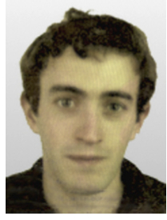

{% include JB/setup %}

<div class="row-fluid">
  <div class="span9">
	 <h3>Présentation</h3>
   Je suis actuellement <b>Ingénieur de recherche</b> (<i>Post-doc</i>) au LIMSI-CNRS dans l'équipe Traitement du Langage Parlé.
   Recrutement sur le projet DGA RAPMAT (Reconnaissance Automatique de la Parole Multilingue Accentuée pour la Traduction). 
   L’objectif du projet est le développement d’un système de traduction de la parole. Il s’agit de développer un système pouvant fonctionner en 
   environnement mobile, pour de nombreuses paires de langues dont des langues peu dotées, et avec des temps de réponse très courts.
   <hr/>
  <h3>Recherche</h3>
   Mes thématiques de recherche actuelles portent sur :
    <ul>
      <li>Le développement de systèmes de reconnaissance automatique de la parole pour des langues peu
      dotées, en apprentissage non supervisé</li>
      <li>L'identification nommée du locuteur</li>
      <li>La mise en place de stratégies pour décoder, en adaptant les modèles à la volée, des données pouvant être très anciennes (façon de parler différente, vocabulaire, conditions acoustiques, ...) ou au contraire contemporaines</li>
    </ul>
     <hr/>
     <h3>Expérience professionnelle</h3>
    <ul>
      <li>
        <b>2009 - 2013 :</b> <b>Ingénieur de recherche</b> à mi-temps, Société Spécinov - SSII située à Trélazé, Maine et Loire (CDI)
          Développement d’une application d’assistance par ordinateur à la réalisation de transcription de la parole. Cette application est utilisée dans un contexte d’auto-adaptation : le modèle de langage, le modèle acoustique et le vocabulaire de chaque client est adapté quand il renvoie son texte corrigé au système. Également chef de projets sur d’autres petits projets.
      </li>
      <li>
        <b>2009 - 2013 :</b> <b>Maître de conférences associé à mi-temps (PAST)</b> Université du Maine, Le Mans (CDD) Recherche : Continuation de mes travaux de recherche initiés durant ma thèse autour de l’auto-adaptation, identification nommée du locuteur, détection du rôle.
      </li>
      <li><b>2006 - 2009 : </b> <b>Chercheur-Doctorant CIFRE</b></li>
    </ul>
     <hr/>
     <h3>Enseignements</h3>
      Depuis le début de ma thèse, j'ai donné 788h (equiv.TD) de cours à l'université du Maine de la Licence 1 au Master 2.
      Plus de détails dans la partie "Enseignements".
     <hr/>
  </div>
  <div class="span3">
	  
      <dl>
	    <dt>e-m@il</dt>
        <dd>lastname@limsi.fr</dd>
        <dt>mail</dt>
        <dd>LIMSI-CNRS</dd>
		<dd>BP 133</dd>
		<dd>F-91403 ORSAY CEDEX</dd>
        <dt>phone</dt>
        <dd>+33 (0) 1 69 85 81 88</dd>
	  </dl>
	</div>
</div>


